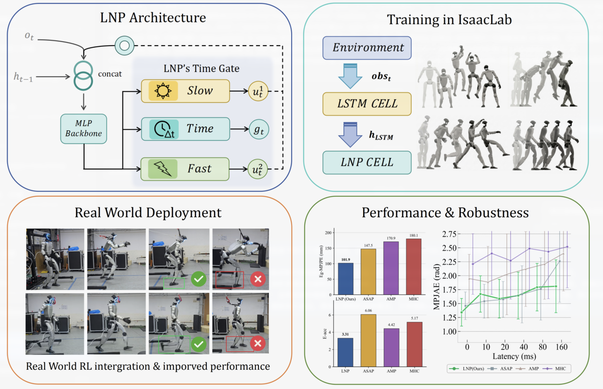
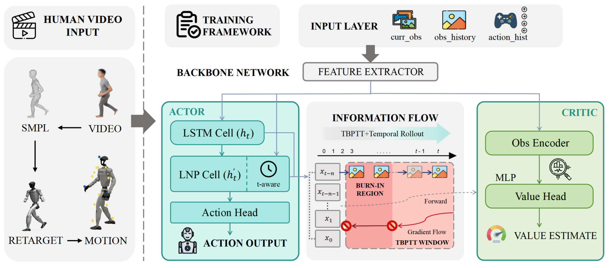

Muted for autoplay — unmute for the narrated audio.
Tracking agile, whole-body human motion on a humanoid robot demands a control policy that can reason over both long temporal context and fast, instantaneous action–state dynamics, while remaining robust to the latency and timing jitter inherent to real hardware. We present LNP (Liquid Network Policy), a time-conditioned hybrid-memory recurrent policy for humanoid whole-body motion tracking. LNP combines a recurrent LSTM branch, which captures long-horizon temporal context, with a continuous-time liquid recurrent branch, which models rapid action–state dynamics. The two memory streams are fused through a time-aware gate that is explicitly parameterized by the control period, allowing the policy to adapt its effective memory horizon to the rate at which it is queried. We train LNP with a PPO-compatible truncated backpropagation-through-time procedure that carefully handles state recovery, overlapping windows, burn-in, and loss masking on valid segments. Across four challenging motion-tracking tasks, LNP attains higher success rates and lower tracking error than strong baselines, and it transfers to a real humanoid with substantially improved tolerance to observation latency.

A dual-branch recurrent policy that unifies long-horizon LSTM context with fast continuous-time liquid dynamics.
An interpolation gate parameterized by the control period adapts the effective memory horizon to the query rate.
A PPO-compatible TBPTT scheme with state recovery, overlapping windows, burn-in, and valid-segment loss masking.
Zero-shot deployment on a real humanoid with graceful degradation under 0–160 ms observation latency.

The core of LNP is a learned interpolation between two complementary memory streams. Given the LSTM hidden
state and the liquid-cell hidden state, a time-aware gate gt mixes them as a
function of the control period Δτ:
gt = σ( at ⊙ Δτ + bt ).
When the policy is queried frequently (small Δτ), the gate favors the fast liquid
branch to track instantaneous dynamics; when the effective control period grows—for instance, under
observation latency—the gate shifts weight toward the long-horizon LSTM context. This explicit
dependence on Δτ is what gives LNP its characteristic robustness to timing variation
on real hardware.
We evaluate LNP on four agile motion-tracking tasks against strong recurrent and adversarial baselines. LNP consistently achieves the highest success rate and the lowest global tracking error (Eg-mpjpe), demonstrating the benefit of time-conditioned hybrid memory.
| Task | Method | Success (%) ↑ | Eg-mpjpe ↓ |
|---|---|---|---|
| Aerial Turn | LNP (Ours) | 100 | 101.9 |
| ASAP | 100 | 147.5 | |
| AMP | 0 | 170.9 | |
| MHC | 0 | 180.1 | |
| Forward Leap | LNP (Ours) | 100 | — |
| ASAP | — | — | |
| Run-and-Kick | LNP (Ours) | 100 | — |
| ASAP | — | — | |
| Fast Walk | LNP (Ours) | 100 | 88.8 |
| ASAP | — | — |
Higher is better for success rate (↑); lower is better for tracking error (↓). Best results per task are highlighted. Metric definitions follow the paper: Eg-mpjpe denotes global mean per-joint position error.
We deploy the trained policy zero-shot on a real humanoid. LNP transfers reliably to hardware, improving both success rate and Cartesian tracking error over the strongest simulation baseline.
| Task | Method | Success (%) ↑ | Tracking Error (mm) ↓ |
|---|---|---|---|
| Jump-Forward | LNP (Ours) | 90 | 59.7 |
| ASAP | 70 | 68.1 | |
| Fast Walk | LNP (Ours) | 100 | 50.1 |
| ASAP | 100 | 59.8 |
Real-hardware evaluation. LNP attains higher success and lower end-effector tracking error than ASAP, confirming that the time-aware hybrid memory transfers to the physical platform.
A central advantage of the time-aware gate is graceful behavior under delayed observations. As injected observation latency increases from 0 ms to 160 ms, baselines degrade sharply, whereas LNP maintains high tracking quality by shifting memory weight toward its long-horizon branch. This makes LNP markedly more dependable for real-time control on hardware with non-negligible sensing and communication delays.
Performance evaluated across the full latency sweep relevant to real deployment.
LNP retains tracking quality where adversarial and single-memory baselines collapse.
The gate re-balances fast and slow memory as the effective control period changes.
We introduced LNP, a time-conditioned hybrid-memory recurrent policy for humanoid whole-body motion tracking. By fusing a long-horizon LSTM branch with a fast continuous-time liquid branch through a control-period-aware gate, and by training the policy with a carefully designed PPO-compatible TBPTT procedure, LNP achieves state-of-the-art tracking accuracy in simulation, transfers zero-shot to a real humanoid, and remains robust to observation latency. We believe time-conditioned memory is a promising direction for reliable real-time control of agile humanoid systems.
@inproceedings{lnp_anonymous,
title = {LNP: Liquid Network Policy for Humanoid Whole-Body Motion Tracking},
author = {Anonymous Author(s)},
booktitle = {Proceedings of the Anonymous Conference (Under Review)},
year = {2026},
note = {Double-blind submission. Author and affiliation information withheld.}
}